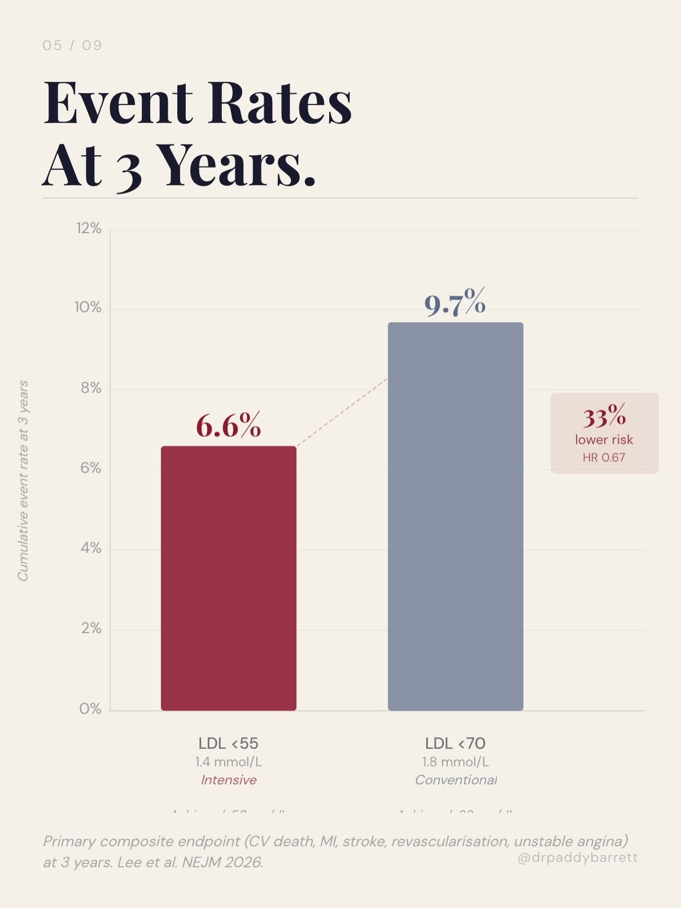
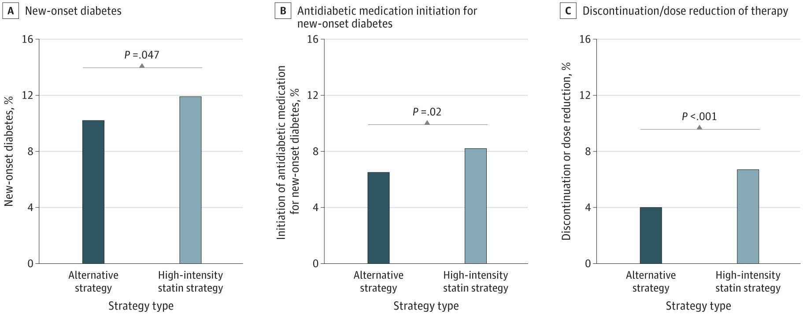
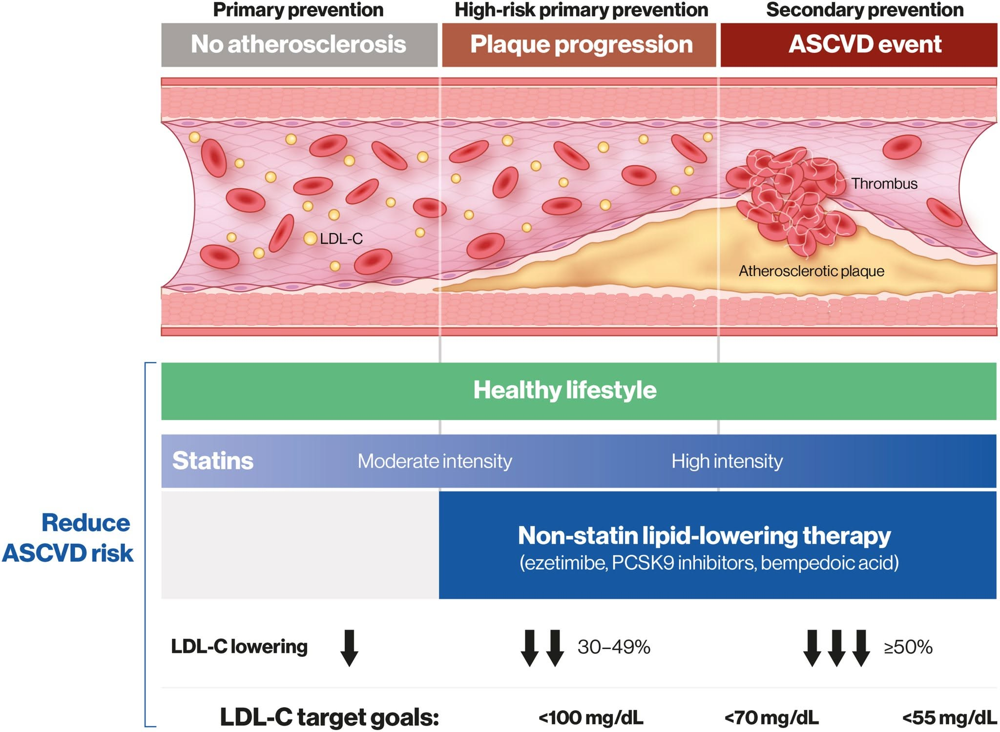

Ezetimibe is an oral, once-daily cholesterol-lowering drug that works in the gut rather than the liver. It stops much of the cholesterol in food and bile from being absorbed into the bloodstream, which lowers LDL cholesterol (LDL-C, the cholesterol carried in "bad cholesterol" particles that build up in artery walls). On its own it lowers LDL-C by roughly a fifth; added to a statin it gives a meaningful extra drop.1
The group's central message is that ezetimibe is best understood as the first, cheapest and best-tolerated add-on when a statin alone does not bring LDL low enough. The 2025 ESC/EAS dyslipidaemia guideline update, as summarised in a shared graphic, calls it the first-line oral add-on, with injectable PCSK9 drugs and inclisiran reserved for later steps in very-high-risk patients.8 Recent randomized trials, notably Ez-PAVE and FLOWPROMOTE, have strengthened the case for lower LDL targets reached with statin plus ezetimibe.39
The group is just as clear about the limits. Ezetimibe's proven outcome benefit comes from trials where it was added to a statin; it has not been shown to prevent heart attacks or strokes by itself.4 The sections below explain how it works, what the evidence shows, where the evidence is thin, and what the admins suggest discussing with your doctor.
What ezetimibe is and how it works
Ezetimibe inhibits cholesterol absorption in the small intestine.1 Statins work in a different place: they reduce cholesterol production in the liver. A shared FLOWPROMOTE explainer puts the two side by side, describing rosuvastatin as reducing cholesterol production in the liver while ezetimibe blocks absorption in the small intestine, so that the two together lower LDL further than either alone.10
A quick reference post by Gokhan (compiled from Google AI Overviews, which he says he spot-checked) gives these typical effects.1
- Alone: LDL-C down about 15-25%, with an average of about 18-20%.
- Added to a statin: a further 21-30% reduction in LDL-C.
- ApoB (the count of atherogenic particles) down roughly 17-20% on monotherapy.
- A modest rise in HDL-C and a modest fall in triglycerides.
The same 2025 ESC/EAS summary lists ezetimibe at about 20% LDL-C reduction, compared with about 23% for bempedoic acid alone (about 38% together with ezetimibe) and about 50-60% for PCSK9 antibodies.8 A separate post lists the main alternatives for people who cannot tolerate statins: ezetimibe, bempedoic acid, inclisiran, Repatha and Praluent.11
Dosing and tolerability
Ezetimibe is usually taken daily. Its elimination half-life of about 22 hours means less frequent dosing can still work. In a small 2008 study from The American Journal of Cardiology, 33 patients (94% of whom had been put on ezetimibe because of muscle pain, raised liver enzymes or gut intolerance with other lipid drugs) took it three times a week. Over about 58 days, total cholesterol fell 15% and LDL-C fell 20% (about 30 mg/dL); 85% tolerated it and 48% reached their LDL goal.12 This was a small, short, uncontrolled study.
On personal experience, Gokhan reports that he did poorly on atorvastatin at any dose, was fine on rosuvastatin, and later added ezetimibe. He found combined LDL lowering with ezetimibe and then Repatha felt good, though he labels this anecdote and speculation rather than evidence.13 In another post he describes hesitating over low-dose ezetimibe before reconsidering it to approach an LDL near 50 mg/dL with his cardiologist's support.14 He also notes that on rosuvastatin 5 mg plus ezetimibe 10 mg his LDL (90, then 63 mg/dL) was not very different from low-dose rosuvastatin alone, a reminder that individual responses vary.15
What the evidence shows
Outcome evidence for statin plus ezetimibe
Gokhan's evidence digest collects several lines of data on adding ezetimibe or other non-statin drugs to a statin.16
- A meta-analysis of 15 randomized trials (123,785 patients) of intensified lipid lowering (ezetimibe, bempedoic acid or PCSK9 inhibitors) added to statins found 19% fewer cardiovascular events than statin monotherapy (OR 0.81), with lower odds of heart attack (OR 0.81) and ischemic stroke (OR 0.77). All-cause mortality was not improved (OR 0.99), even in studies with at least 3 years of follow-up.16
- In a Canadian primary-prevention study of 67,884 people, the combination of a statin and ezetimibe was compared with a high-intensity statin and was linked to lower all-cause death (HR 0.85) and stroke (HR 0.86), with no difference in heart attack or revascularization.16
- In a Finnish registry of 57,505 people after a heart attack, early ezetimibe use was associated with lower all-cause mortality (adjusted HR 0.77). Only 3.7% had started ezetimibe at 90 days and 13.4% at 5 years, and 43.6% discontinued it during follow-up.16
- In 264 STEMI patients, rosuvastatin 40 mg plus ezetimibe 10 mg reached an LDL below 55 mg/dL in 90% versus 47.9% on rosuvastatin alone.16
Show data
| Odds ratio | 95% CI | |
|---|---|---|
| Cardiovascular events | 0.81 | 0.75–0.86 |
| Heart attack | 0.81 | 0.74–0.89 |
| Ischemic stroke | 0.77 | 0.70–0.84 |
| All-cause mortality | 0.99 | 0.93–1.04 |
The registry and cohort findings are observational and can be shaped by who gets prescribed what. The digest itself also notes that the meta-analysis showed no mortality benefit. A shared news report, filed under the title "Statin + ezetimibe for high risk prevention," likewise concluded that blocked-artery patients should get a statin plus ezetimibe straight away rather than a statin alone, which it said could prevent thousands of deaths a year, but the post gives no numbers.17 A separate post by Louis, quoting a group member's summary, mentions the IMPROVE-IT trial (ezetimibe plus simvastatin) as showing a 2% absolute risk reduction in heart attack, while cautioning that the broader mortality trends it discusses are correlation, not causation.18
Ez-PAVE: how low should LDL go?
Ez-PAVE, published in the New England Journal of Medicine, randomized 3,048 people with atherosclerotic cardiovascular disease to an LDL target below 55 mg/dL (1.4 mmol/L) or below 70 mg/dL (1.8 mmol/L) and followed them for 3 years.3 The 70 mg/dL group was managed with statins; the 55 mg/dL group with statin plus ezetimibe.19
- The primary composite (cardiovascular death, heart attack, stroke, revascularisation or hospitalisation for unstable angina) occurred in 6.6% versus 9.7%, a hazard ratio of 0.67 (95% CI 0.52-0.86).3
- Non-fatal heart attack was cut by more than half and revascularisation fell 37%; safety was reported as equivalent.319
- The shared write-up notes that fewer than 25% of eligible patients reach an LDL below 55 mg/dL, fewer than 10% receive ezetimibe and around 1% receive a PCSK9 inhibitor.3

Louis frames it as "lower LDL" against "even lower LDL" in people who were all already treated, and argues it undercuts the view that LDL does not matter.19 A Joel Kahn comment shared by Louis says the study supports "the lower, the longer, the better" and that routinely adding ezetimibe is a smart path, though the post gives no study details.20
FLOWPROMOTE: plaque regression
FLOWPROMOTE (JAMA Cardiology, October 2026) studied 104 statin-naive adults in Denmark with stable coronary disease and more than 50% narrowing. Plaque was measured by coronary CT angiography at baseline, 9 and 18 months. One group took atorvastatin 40 mg; the other took rosuvastatin 40 mg plus ezetimibe 10 mg.910
| Outcome at 18 months | Atorvastatin 40 mg | Rosuvastatin 40 mg + ezetimibe 10 mg |
|---|---|---|
| Achieved LDL-C | about 69.5 mg/dL | about 42.5 mg/dL |
| Total plaque volume | about -13.6% | about -21.1% |
| Non-calcified (soft) plaque | about -20.0% | about -28.2% |
These figures are from posts quoting the paper.221 One post gives baseline LDL as about 120 to 70 versus 127 to 42 mg/dL, a total plaque difference of about 31 cubic millimetres, and soft plaque shrinking in 39 of 51 versus 51 of 52 participants.22 Other posts report regression in 98% versus 77% for non-calcified plaque, and 90% of the lower-LDL group for total plaque.223 The percentages differ slightly between posts, so check the paper for exact values.
The trial also found a linear relationship between achieved LDL and the amount of regression, which Louis reads as further support that LDL is causal in atherosclerosis.23 Calcified plaque rose in both groups, which the posts interpret as soft plaque hardening and stabilising.2122
Caveats stated in the posts are worth keeping in mind. FLOWPROMOTE was designed as an imaging study, not a trial of heart attacks or strokes.922 The comparison also changed two things at once (a different statin plus the addition of ezetimibe), so on its own it cannot separate the effect of the drug from the effect of the lower LDL it produced. A shared review cited by Louis reports that each 1-point drop in percent atheroma volume was associated with about 19% lower odds of major cardiovascular events, but the post stresses these are associations, not proof.2
Other imaging trials
Louis shares a summary of imaging trials by group member Daniel Chong. It lists PRECISE-IVUS (2015), in which ezetimibe was linked to a 1.4% fall in percent atheroma volume with regression in 78% of patients, and ZEUS (2014), in which adding ezetimibe in diabetic acute coronary syndrome shrank plaque 13.9% versus 5.1% with a statin alone.24 Gokhan's ranking of plaque interventions says at least six IVUS trials of adding ezetimibe showed numerically greater regression (-2.9% to -13.9% total atheroma volume), though not all reached statistical significance.25
A chart from a 2022 JACC review, shared by Louis, plots LDL-C against change in total plaque volume across trials of statins, PCSK9 inhibitors, ezetimibe and other drugs. Louis reads it as showing regression starting once LDL-C falls below roughly 90 mg/dL.2627 He lists six statin trials with 5% to 17% reversal in total plaque, driven by soft plaque.2829 Louis also lists ezetimibe among the LDL-lowering drugs in his collection of at least six plaque-reversal strategies.30
Nuances, controversies and common misconceptions
Ezetimibe alone is not proven to prevent heart attacks
Louis warns against stopping a statin in favour of ezetimibe: no randomized trial has shown ezetimibe by itself lowers the risk of heart attack and stroke, which is why most cardiologists add it to statins rather than substituting it.4 The guideline-based picture is the same: statins first, ezetimibe added if the goal is not reached.31 For people who truly cannot take statins, ezetimibe is one of the listed alternatives, usually judged by its LDL effect.1112
Combination instead of a higher statin dose
Several posts discuss pairing a moderate-intensity statin with ezetimibe rather than increasing the statin.
- A JAMA Cardiology paper shared by Gokhan found that a moderate-intensity statin plus ezetimibe gave similar major-event outcomes to a high-intensity statin in ASCVD, with greater LDL lowering, better tolerance and less new diabetes.32
- A NEJM clinician summary reports that in people aged 70 and older, this combination lowered LDL similarly to a high-intensity statin with significantly fewer muscle symptoms.5
- Gokhan's digest cites a systematic review of 8 studies (40,236 patients) in secondary prevention in which the combination was linked to lower cardiovascular and all-cause mortality and fewer muscle-related adverse events than a high-intensity statin.16

LDL targets differ by risk
A 2023 JAHA review, summarised by Gokhan, suggests at least a 50% LDL-C reduction and a goal below 70 mg/dL for high-risk patients, and below 55 mg/dL (or below 40 mg/dL after recurrent events on statins) for very-high-risk patients. It suggests considering ezetimibe and/or a PCSK9 inhibitor when this is not reached on maximally tolerated statins.31 Gokhan has also argued that benefit depends on both how low and how long LDL is lowered, and estimates about 60% lifetime risk reduction from a 70-point drop sustained for 30 years, noting that effects at very low levels are unknown.33 This estimate was read from a chart and is his own projection.

Does a rising calcium score mean it is not working?
Posts on FLOWPROMOTE point out that a calcium score only sees calcified plaque. On a statin, plaque tends to pick up calcium as it hardens, so a higher score does not by itself mean the treatment failed. How fast it rose and the LDL level matter more; an older study linked a score rising over 15% a year to higher first heart attack risk.22
Inflammation, brain and cancer reports
- Inflammation. A pooled analysis of placebo-controlled trials found ezetimibe added to a statin gave a significant extra 10% reduction in CRP, while on its own it gave a non-significant 6%.34 Louis cites a meta-analysis listing average hsCRP falls of 17.3% for statins and 3.2% for ezetimibe.35 A Cardiovascular Research meta-analysis concluded that ezetimibe, statins, bempedoic acid and omega-3 lower CRP independently of LDL-C reduction.36 Louis also notes that statins, especially with ezetimibe, lower Lp-PLA2, a plaque-specific inflammation marker.37
- Dementia. A 2024 Aging Biology paper analysing clinical databases (nearly 950,000 older adults in one report) found much lower Alzheimer's and related dementia incidence among ezetimibe users (reported as 86% lower, or over sevenfold) plus effects on protein aggregation in lab-grown neurons.63839 It is an observational association and the researchers call for further studies.38 Louis also shares a brief post saying ezetimibe seems to reduce amyloid injury, with no study cited.4041 Separately, a Mendelian randomization study of over a million people linked genetic variants that mimic ezetimibe (NPC1L1) to 82% lower dementia per ~40 mg/dL lower non-HDL cholesterol (statin-like variants: 76%).4243 Louis also explains that ezetimibe acts on blood cholesterol and does not change cholesterol production in the brain.44
- Liver cancer. A UK case-control study of 3,719 cases and 14,876 controls linked cholesterol absorption inhibitors to 31% lower odds of liver cancer (statins 35%); the post states this is an association, not proof, and should not be a reason to start a drug.745
- Diabetes. Posts on glucose note a small rise in new diabetes with intensive statin treatment. A review shared by Gokhan lists ezetimibe among options that limit glycemic harm.46 A Gemini-assisted post shared by Louis, however, argues that genetic proxies for ezetimibe's target (NPC1L1) also show a modest rise in diabetes risk per unit of LDL lowered, suggesting a link to LDL lowering itself rather than to one drug.47
- Lp(a). Louis shares an explainer saying that across 147 trials, statins, ezetimibe, fibrates and fish oil had no effect on lipoprotein(a), a genetically set LDL-like particle.48
What this means for you
These points reflect the group's discussion and are not personal medical advice.
- If LDL is still above goal on a statin, the admins' framing is that ezetimibe is the natural first add-on to discuss with your doctor.831
- The strongest direct outcome evidence is for adding ezetimibe to a statin to reach lower targets (for example below 55 mg/dL in very-high-risk people).3
- If a high-intensity statin causes muscle symptoms, the evidence shared suggests a moderate statin plus ezetimibe is a reasonable option to raise with your doctor, particularly in older adults.532
- Stopping a statin to use ezetimibe alone is not supported by outcome trials.4
- Do not treat a rising calcium score on treatment as automatic failure; ask your doctor to interpret it alongside LDL and imaging.22
- Ezetimibe is also paired with newer agents; for example, a combination tablet of obicetrapib with ezetimibe was approved in the EU in 2026, with company-reported LDL falls of about 50% versus placebo.49
- Treat reports on dementia or cancer as hypotheses, not reasons to start the drug.738
Frequently asked questions
How much will ezetimibe lower my LDL?
About 18-20% on its own, and a further 21-30% when added to a statin, according to the reference post.1 Individual results vary; one admin saw little difference between low-dose rosuvastatin alone and with ezetimibe.15
Can I take ezetimibe instead of a statin?
Louis says no randomized trial has shown ezetimibe alone lowers heart attacks or strokes, so replacing a statin is a "big risk" in his words.4 For genuine statin intolerance, ezetimibe is a listed alternative, and a small study found thrice-weekly dosing lowered LDL 20%.1112
Does lower LDL really give better results than "good enough"?
In Ez-PAVE, going below 55 mg/dL rather than 70 mg/dL cut major events by 33% over 3 years, and in FLOWPROMOTE lower achieved LDL went with more plaque regression.323
Does ezetimibe cause side effects?
The shared studies mostly report good tolerance: 85% tolerated it in the thrice-weekly study, and Ez-PAVE reported equivalent safety.312 A meta-analysis in the digest found no significant difference in adverse events between moderate statin plus ezetimibe and high-intensity statins.16
Will ezetimibe protect against dementia?
Maybe, but this is not established. The evidence is database association and genetics.642 Lipophilic statins such as atorvastatin cross into the brain, whereas ezetimibe does not affect brain cholesterol.44